Take A
Hike
GET HIKING
GET INFORMED
GET INVOLVED
Take A Hike
Step outside and get some fresh air. Right in your neck of the woods.
Use the filters to find A hike
DIFFICULTY
Easy
Moderate
Hard
DISTANCE
Short < 1 mile
Medium 1 - 3 miles
Long 3.5+ miles
DURATION
Short < 1 hour
Medium 1-2 hours
Long 2.5+ hours
Clear Filters
No items were found matching the selected filters
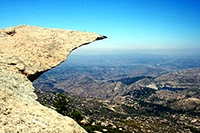
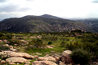
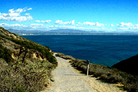
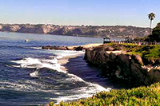
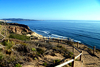
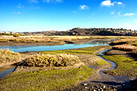
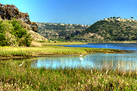
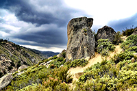
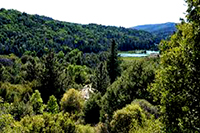
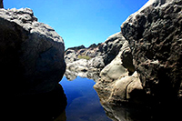
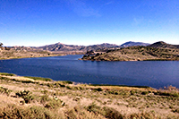
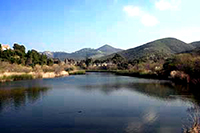
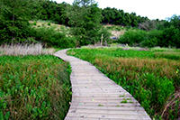
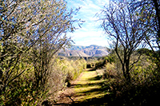
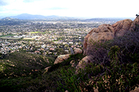
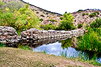
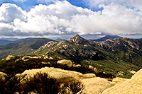
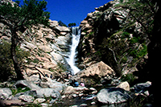
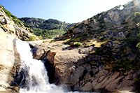
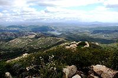